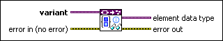

Get Set Collection Information VI
Owning Palette: Data Type Parsing VIs
Requires: Base Development System
Retrieves set information from the data type stored in variant.
 | Note This VI does not return information about values stored in the set. |

 Add to the block diagram Add to the block diagram |
 Find on the palette Find on the palette |